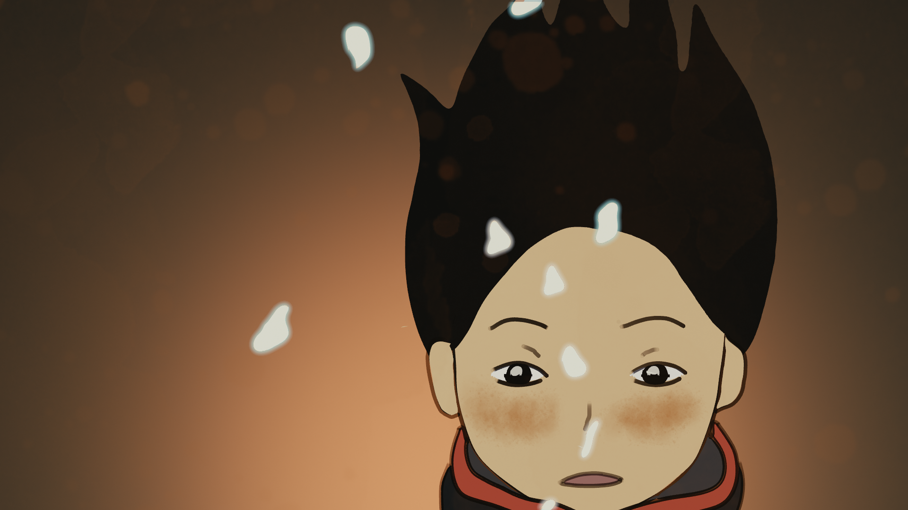
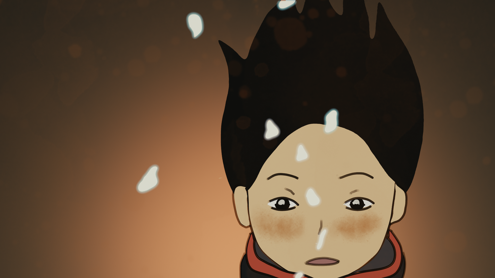

Chagu Bakha One Story
Thesis Two Final Project
Completion Time: 1 month
Saving a dying culture through digital storytelling
Chagu Bakha is an animated short film about an ancient folklore about a Diety in the Newar culture in Nepal. My hope is that digital storytelling can reconnect young people from my ethnic group, the Newars, with our cultural identity. I explore digital storytelling with the memories of my hometown and my childhood within the Newari culture in Kathmandu.
Chagu Bakha means One Story in Newari Language. The piece is an animated short film about an ancient folklore about a Diety in Newar Culture. I am from a small ethnic group in Nepal called Newars from Kathmandu. Scholars have compared Newar culture to ancient Greece and Rome in its power and complexity. But that culture is eroding and in danger of being lost. Even the Newar language is now endangered. The younger Newars are becoming disconnected from the stories that pass on their religious, cultural and social identity. Those are the stories that tell you who you are. A story is a living thing, though, and for a story to stay alive, it has to be retold in new ways. I explore digital storytelling with memories of my hometown and my childhood within the Newari culture in Kathmandu.
The animation is made entirely in Blender 2.8 with grease pencil and post production done in Adobe After Effects and Adobe Premiere.
 
